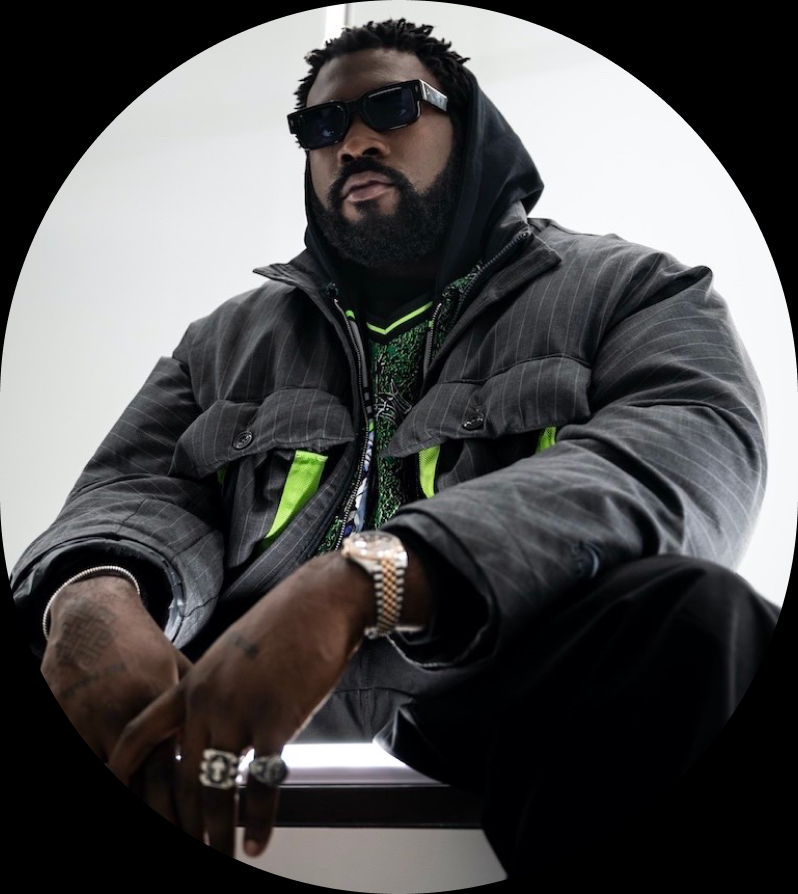

Biographie de Damso
Damso, de son vrai nom William Kalubi, né le 10 mai 1992 à Kinshasa est un rappeur-auteur-compositeur-interprète belgo-congolais. Il est actif dans le monde du rap depuis 2006. Son premier projet est une mixtape sortie en 2014 et s’intitule Salle d’attente. En 2015 il est alors repéré par le duc de Boulogne. Il intègre alors le label 92i et signe chez Universal Music France. Booba l’a fait connaître sur le morceau Pinocchio où Damso lâche un couplet qui plaît énormément aux auditeurs de B2O.

Damso sort son premier album « Batterie faible » en 2016 qui est aujourd’hui certifié double disque de platine (200'000 ventes ). Courant 2017 sort son album le plus vendu actuellement « Ipséité » certifié disque de diamant (500'000 ventes ). Pour la coupe du monde de football 2018, la Fédération belge avait choisi Damso pour interpréter leur hymne mais elle est revenue sur sa décision pour des paroles dites « sexistes » de l’artiste après plusieurs plaintes des associations féministes belges. Il sort alors le morceau sur son 3ème album intitulé Lithopédion en tant que Bonus Track .
L’album est certifié triple disque de platine (300'000 ventes). Damso annonce début 2019 vouloir faire une pause dans sa carrière pour prendre du temps pour lui et demande qu’on lui envoie des instrumentales pour son projet QALF teasé depuis 2015. Il apparait sur quelques feats lors de ses 2 ans de pauses dont Nekfeu, Kalash, Dadju, Vegedream et Hamza ou il annonce en décembre 219 que l’album de l’année ne sortira pas cette année car sa mère est dans le coma. En Janvier 2020, Damso crée son propre label « TheVie Music » alors en embrouille avec Booba depuis 2018.
Cette pause d’un an et demi dans sa carrière solo
lui aura permis d’écrire pour Kendji Girac (4 morceaux),
Shay (1 morceau)
et Louane ( 2 morceaux ).
Damso continue de donner des indices sur l’album QALF mais
rien de concret jusqu’au 28 aout ou apparaissent des affiches avec un
QR code qui amène sur une page de précommande de l’album.
Il sort finalement le 18 septembre 2020. Le jour de la sortie Damso
a été l’artiste le plus écouté de la journée dans le monde avec 14,3
millions de streams.